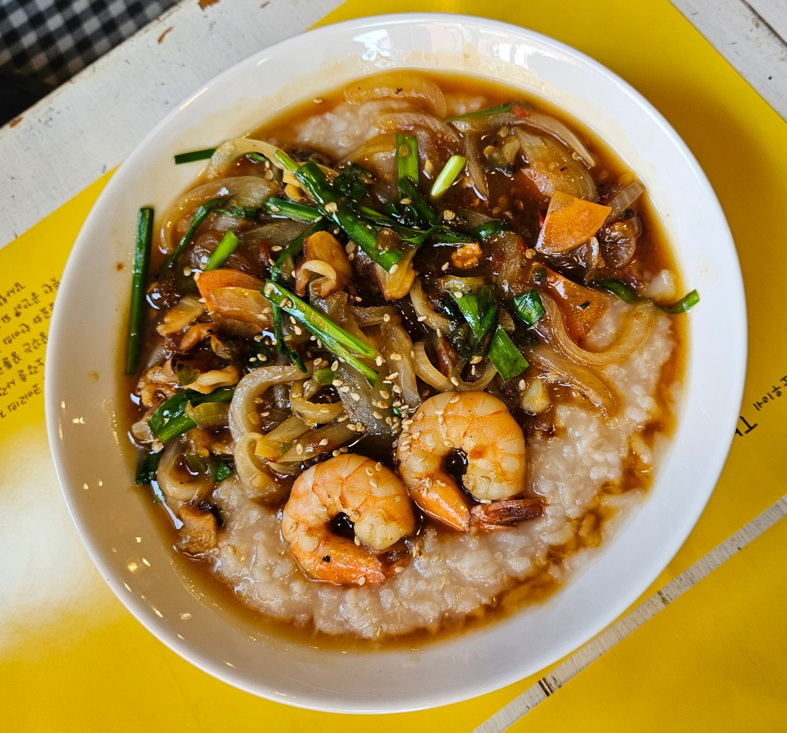
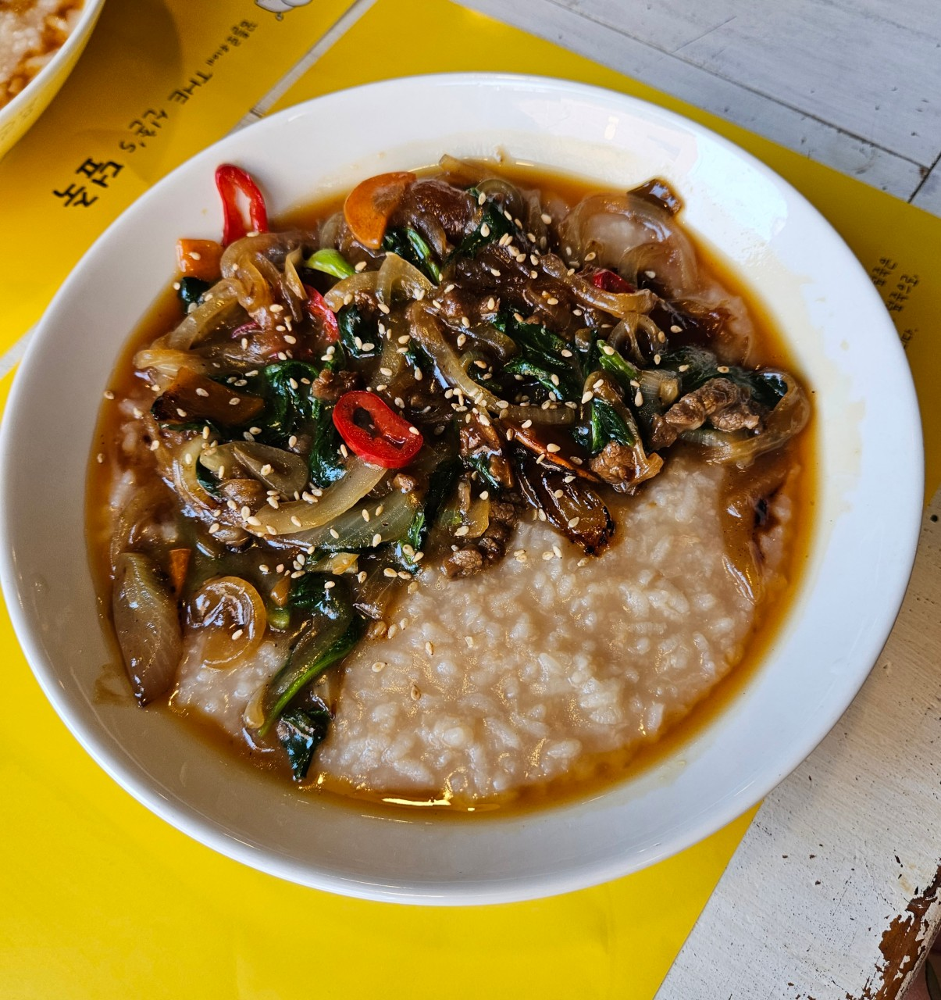
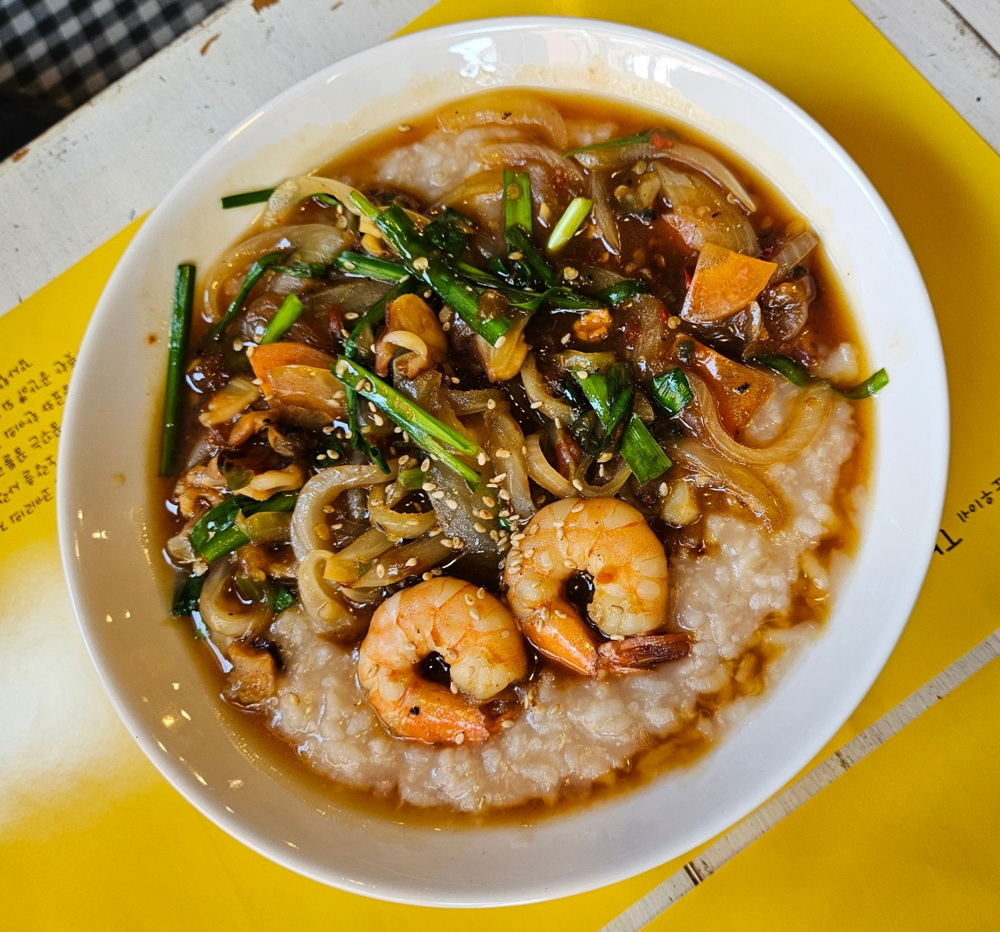
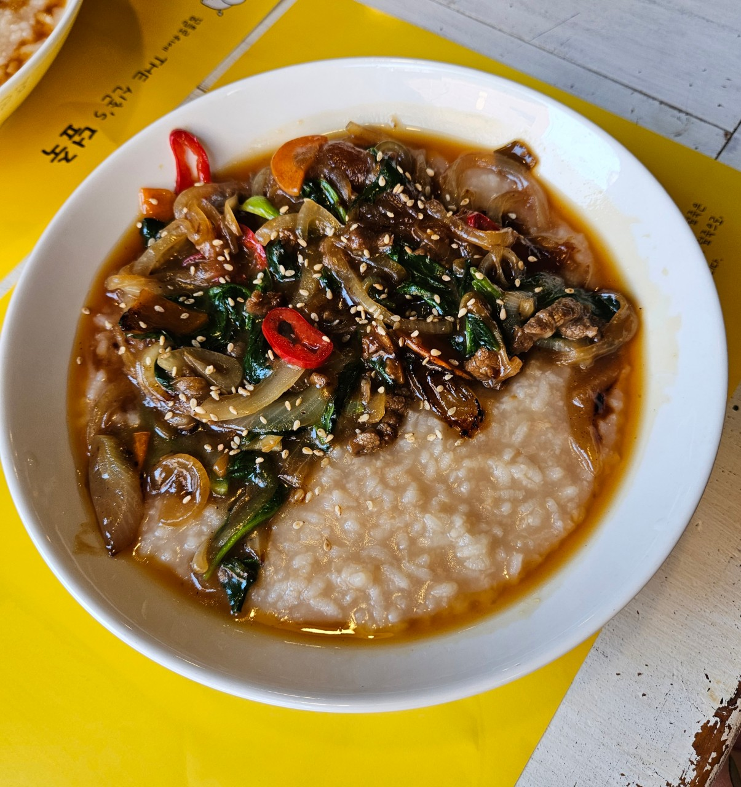

메뉴
| 1 | 소문덮죽 |  | |
| 2 | 시소덮죽 |  |

2020년 SBS '백종원의 골목식당'에 출연했던 덮죽집 사장이 3년만에 획득한 상표권 출원을 알리며 백종원에 감사 인사를 전했다.
28일 당시 출연했던 덮죽집 최민아 사장은 "드디어 상표출원 나왔어요. 3년이라는 긴긴 기다림과 많은 분들의 도움 덕분에 드디어 상표등록증이 제게 왔어요"라고 알렸다.
그러면서 자신의 가게 이름과 메뉴 이름으로 출원한 상표등록증 3장을 사진으로 공개했다.
사장님은 "나의 무지함으로 준비하지 못한 상표권은 뒤늦은 후회로 감당할수 없는 결과가 되었는데 많은 시간과 많은 분들의 도움으로 찾을 수 있었습니다"라며 "끝까지 신경 써 도와주신 멋진 백종원 대표님, 그리고 아주법인의 이창훈 변리사님 정말 진심으로 진심으로 감사드립니다"라고 인사했다.
또 "특허청에 전화하시고 글 남기시고 직접 찾아 가 저의 편에 서주신 진짜 진짜 많은 이름 모를 분들께 진심으로 감사드립니다"라며 "사는 동안 감사 하는 마음 잊지 않고 저 또한 그런 사람으로 살겠습니다"라고 익명의 시청자들에게도 고마운 마음을 전했다.
앞서 3년 전 포항의 한 덮죽집을 찾았던 백종원은 그녀가 만든 레시피를 응원하면서 도움을 줬다. 하지만 방송 직후 화제가 되자 포항 덮죽집과 유사한 메뉴를 내세운 덮죽 업체가 프랜차이즈 가맹계약을 체결한다고 알려져 논란이 됐다. 해당 덮죽 집은 '골목식당' 포항편을 언급, "외식업 전문 연구진이 참여한 '덮죽덮죽'이 수개월의 연구를 통해 자체적인 메뉴로 개발해 프랜차이즈 브랜드로 런칭한다고 알린 것.
당시 포항 덮죽집 사장은 당시 표절 업체로 인해 고생했다고 밝히며 백종원과 제작진 앞에서 눈물을 흘렸다. 사장은 "서울에서 온 손님으로부터 강남점에 오픈하셨나는 이야기를 들어서 처음에는 무슨 말인지 몰랐다"며 '덮죽'으로 상표권 등록까지 신청한 표절업체에 당황한 모습을 보였다. 이에 백종원은 "같은 이름의 브랜드로 가져갔는지 이해가 안 된다. 응용할 순 있지만 그 이름 그대로 사장님인 척 해서는 안된다"며 "이렇게 혼자 힘으로 못하는 것에 버팀목이 되어 줄 수 있다. 내가 다 겪어봐서 안다, 싸움은 내가 대신해줄테니 걱정말라"고 안심시킨 바 있다.
| 1 | 소문덮죽 |  | |
| 2 | 시소덮죽 |  |